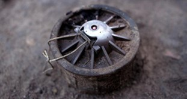

Antipersonnel mines are indiscriminate weapons that injure and kill civilians in every corner of the globe, every day.
Lying in wait for their victims, they don't recognize ceasefires and continue to kill and maim long after the end of conflicts. They instill fear in communities and are a lethal barrier to developmentAntipersonnel landmines are explosive devices designed to be detonated by the presence, proximity or contact of a person. Placed under or on the ground, they can lie dormant for years and even decades until a person or animal triggers their detonating mechanism.
Incapable of distinguishing between the footfall of a soldier and that of a child, antipersonnel mines cannot be aimed. They indiscriminately kill or injure civilians, aid workers, peacekeepers and soldiers alike. They pose a threat to the safety of civilians during conflicts and long afterwards.

©Tim Grant
Made of plastic, metal or other materials, they contain explosives and sometimes pieces of metal or other objects meant to cause additional injury. They can be activated by direct pressure from above, by pressure put on a wire or filament attached to a pull switch, or even simply by the proximity of a person within a predetermined distance.
Antipersonnel landmines claim victims across the globe each day. When triggered, a landmine unleashes unspeakable destruction, often destroying one or more limbs and projecting metal and debris into the wound, as well as causing burns, blindness or other life-long injuries. Sometimes the victim dies from the blast, due to loss of blood or because they don't get to medical care in time. Those who survive and receive medical treatment often require amputations, long hospital stays, multiple operations, and extensive rehabilitation.
Stepping on a blast antipersonnel mine will invariably cause severe foot and leg injuries, and secondary infections usually resulting in amputation. Fragmentation mines project hundreds of metal fragments, showering the victim with deep wounds. Bounding fragmentation mines are more powerful versions: they spring up about 1 meter and then explode, firing metal fragments to a large radius at waist height.
The Mine Ban Treaty defines an antipersonnel mine as: "a mine designed to be exploded by the presence, proximity or contact of a person and that will incapacitate, injure or kill one or more persons." (Article 2.1)
Nobody knows how many mines are in the ground worldwide. But the actual number is less important than their impact: it can take only a few mines or the mere suspicion of their presence to render a patch of land unusable.
Until the 1990s, antipersonnel landmines had been used by most armed forces of the world, in one form or another, causing tens of thousands of casualties a year and creating many hardships for affected communities that could no longer safely access land, buildings, and natural resources.
The horrendous effect of landmines on communities throughout the world was witnessed by the founding member organizations of the ICBL, which joined forces in 1992 to address the problem. It soon became apparent that the only real solution to address the landmine crisis was a complete ban on antipersonnel mines. No technical changes or changes to the rules on their use could change the fact that an antipersonnel mine is inherently indiscriminate. Once planted it will never be able to tell the difference between a military and civilian footstep and will remain a threat to communities for decades to come.
The ICBL, in close partnership with a small number of states, the ICRC, and the UN, therefore put in motion what was later known as the “Ottawa Process” that led to the adoption of the Mine Ban Treaty in September 1997. The Mine Ban Treaty, which includes a comprehensive ban on all antipersonnel mines as well as several measures to redress the harm from past use, was adopted in Oslo (Norway) in September 1997 and opened for signature on 3 December 1997 in Ottawa (Canada.)
While numerous challenges remain, landmine use has dramatically dropped thanks to the Mine Ban Treaty, as has global production and trade. Additionally, tens of millions of antipersonnel mines have been destroyed, large areas of contaminated land have been cleared and returned to communities for safe use, and landmine victims’ rights and needs are receiving greater attention by affected states.
Precursors of the weapon are said to have first been used in the American Civil War in the 1800s. But antipersonnel mines were first used on a wide scale in World War II. Since then they have been used in many conflicts, including in the Vietnam War, the Korean War, and the first Gulf War. During the Cold War, many states laid long stretches of landmines along borders.
Today, the weapon is still being used in a handful of conflicts.
Antipersonnel mines were initially developed to protect antitank mines and stop them being removed by enemy soldiers. They were used defensively, to protect strategic areas such as borders, camps or important bridges and to restrict the movement of opposing forces.
A key characteristic of the weapon is that it is designed to maim rather than kill an enemy soldier. This follows the "logic" that more resources are taken up caring for an injured soldier on the battlefield than dealing with a soldier who has been killed.
Over time, antipersonnel landmines began to be deployed on a wider scale, often in internal conflicts and specifically targeting civilians. They were used to terrorize communities, deny access to farming land and restrict population movement.
The practice of marking and mapping minefields was no longer followed strictly. Indeed, many combatants no longer laid mines in a contained area, but placed them around a variety of strategic areas without any specific pattern. As a result, civilians, peacekeepers, aid workers and soldiers alike had no way of knowing if they entered a mined area. Rain, floods, and other factors have also shifted minefields over time. So without clear records, and with the impacts of weather and time, clearing up the mess after a conflict became even harder.
Technological developments saw the production of systems for delivering mines from the air. These were then used in much larger numbers and mapping and marking became almost impossible.
Also, so-called "smart" mines were developed. These self-destructing and self-deactivating mines are meant to destroy or deactivate themselves after a designated period of time. However, like "dumb" or long-lived mines, this so-called "smart" variety are indiscriminate and inhumane weapons when armed. Also, some may fail to self-destruct or self-deactivate and so may remain live indefinitely. They tend to be dropped by air, often in larger numbers than ground delivered mines, and are not fenced, marked or monitored thus posing the same long-term risk to life and limb, as long-lived mines.
Over time it also became obvious that antipersonnel mines often harmed the very people they were there to protect: the soldiers. In addition to mounting soldier casualties, there was growing opposition to mine use within military ranks. Some soldiers came to understand that the humanitarian costs far outweigh the limited and questionable military utility of the weapon.
Over 50 countries have produced antipersonnel mines at some time, both for their own stocks and to supply others.
Thirty-nine of these states have now stopped production, and global trade has almost halted completely. None of the States Parties to the Mine Ban Treaty produces landmines anymore. Unfortunately, 11 states not party continue to reserve the right to do so: China, Cuba, India, Iran, Myanmar, North Korea, South Korea, Pakistan, Russia, Singapore and Vietnam. Actual production may be ongoing in only four of them: India, Myanmar, Pakistan, and South Korea.
At the same time some non-state armed groups or rebel groups in various countries produce antipersonnel mines, mostly of the improvised variety.
For the latest updates see Landmine Monitor.
There are dozens of reasons why all states should get on board the Mine Ban Treaty, and why full implementation of this lifesaving treaty must be ensured. Some of the moral, humanitarian, socio-economic and diplomatic arguments are given here.
Antipersonnel landmines still maim and kill ordinary people every day. They blow off their victims' legs, feet, toes and hands. They fire shrapnel into their faces and bodies. They kill.
Because antipersonnel mines are indiscriminate and stay in or on the ground long after wars end, the vast majority of victims are civilians, not soldiers. Year after year, Landmine Monitor has reported that civilians account for 70 to 85 percent of casualties. This is not just during a conflict – most of the countries where casualties are reported are at peace.
Antipersonnel mines are indiscriminate and inhumane weapons and therefore violate the basic elements of international humanitarian law. The law of war imposes certain restrictions on how combatants operate. It says that they have to distinguish between civilian and military targets and that the injuries inflicted should be proportionate with military objectives. Antipersonnel landmines fail both the discrimination and the proportionality tests.
Landmines are indiscriminate because a landmine is triggered by its victim, whether military or civilian. Landmines are inhumane because, by design, they inflict brutal damage to the human body that kills or create life-long injuries.
Once planted, landmines don't go away until they are removed. Landmines sown during the First World War are still causing death and destruction in parts of Europe and North Africa. Landmines don’t obey peace agreements or ceasefires. The only way to prevent long-term damage is to stop any landmine use altogether and devote resources to clearing minefields and helping mine victims.
Children who are injured by landmines will face months of recovery... if they don't die and if they get treated in time. Many are killed on the spot due to blood loss, shock or damage to vital organs. A growing child with a prosthetic limb will need it refitted each year. Some children never return to school after their accident. Many face social exclusion, for example, they are not seen as fit to marry. Like adult victims, they will face enormous practical, economic, social and psychological challenges in their rehabilitation and reintegration process.
The military arguments for using antipersonnel landmines are deeply flawed. The International Committee of the Red Cross' 1996 study Antipersonnel Landmines - Friend or Foe? concluded that antipersonnel mines are not indispensable weapons, do not have high military value, and don’t necessarily offer any military advantage. In fact “their use in accordance with military doctrine is time-consuming, expensive and dangerous and has seldom occurred under combat conditions,” the group of military experts concluded.
Landmines are not needed by a modern army. While in the past they may have protected borders and slowed advancing troops, now most armies are mobile and can get through a minefield in less than 30 minutes. Modern motion detection equipment, night detection technology and strategically placed guns can protect military installations, borders and other areas better than landmines. Also, landmines injure and kill soldiers - the very people they are meant to protect. For example, in the 1991 Gulf War, landmines caused 34% of USA casualties.
In any case, the long-term humanitarian costs of mines far outweigh any limited military utility. This is why many former military personnel support a ban on antipersonnel mines and reject mine use, such as in this article by Lt. General Robert G. Gard Jr. (USA, Ret.), published in the Huffington Post in 2009. If a country’s military insists that antipersonnel landmines are still essential from a military point of view, suggest they look at the ICRC’s study mentioned above. Also, encourage them to do their own study to review their mine policy and its impact, including on their own soldiers.
Banning landmines makes a difference. We have made a great deal of progress since the Mine Ban Treaty came into force in March 1999. The global stigma attached to these weapons has led to a virtual halt in the global trade in antipersonnel mines, a sharp drop in the number of producers and a drastic reduction in the number of governments laying mines, even among states that still refuse to officially join the treaty. Vast tracts of land have been cleared and put back into productive use; there has been widespread and extensive destruction of stockpiled mines; the rights and needs of landmine victims have gained greater recognition; and most importantly, there are now fewer new mine victims each year.
Banning landmines increases peace and security and can be a valuable peace-building tool. For example, Greece and Turkey, long-term rivals with border disputes, used their shared commitment to joining the Mine Ban Treaty as a confidence building measure. Some states have joined the Mine Ban Treaty despite ongoing internal conflict, such as Afghanistan, Colombia and the Democratic Republic of Congo. Some states, like Cyprus, joined the treaty even though they do not have full control over the area they say falls under their jurisdiction.
Mines are largely ineffective in protecting border regions, for example from smugglers, illegal immigrants or non-state armed groups. Ask your target government to provide information on whether and how landmines have been an effective deterrent for a specific stated purpose (e.g. to stop smuggling). Usually governments cannot prove effectiveness. Instead of offering protection, minefields terrorize and impoverish the communities living in the area. Alternatives exist and include: engaging in dialogue with a neighbor, mobile and fixed border patrol and motion detection equipment and barriers.
Everyone’s support is needed along the road to a mine-free world -- no matter whether the country is mine-affected or not or whether it is large or small. Joining the Mine Ban Treaty is in the interest of mine-affected countries because it will spur international support for their landmine problem. For countries with no mines in stockpiles or in the ground, joining the Mine Ban Treaty is also in their interest as they will gain a higher moral standing within the diplomatic world and will demonstrate their support for affected communities worldwide.
All governments should listen to their citizens and the international community who demand that they take a stand, otherwise they risk becoming moral outcasts. Even interim steps that fall short of joining the Mine Ban Treaty are valuable, such as a moratorium on the use and transfer of antipersonnel mines, the provision of information on landmine stockpiles and their destruction, or voting in favor of the annual United Nations' General Assembly resolution on the treaty.
In 2016 an average of 23 people around the world lost their life or limb to a landmine or another explosive remnant of war, every day.
That means over 8,605 people were hurt or killed in 2016.
Still some 60 countries around the world are contaminated by landmines and thousands of people continue living with a thisdaily threat of losing their life or limb.
In addition emplaced landmines deprive families and communities of land that could be put to productive use such
as agriculture. They maintain a sense of insecurity long after conflicts end, delay peace processes and impede
countries’ development for years.
Though the majority of states worldwide the world have renounced landmines and joined the Mine Ban Treaty,
still
33 states remain outside of the treaty, reserving the right to use landmines at any time.
The majority of the countries remaining outside the treaty keep stockpiles that collectively total around
50 million landmines. If not destroyed, those landmines remain ready to be used any time. The biggest stockpiles
of antipersonnel landmines are held by: China, Russia, the United States, India and Pakistan.
There is also a small group of countries that still continues producing antipersonnel landmines, including
India, Myanmar, Pakistan and South Korea, with a few others reserving the right to produce the weapon.
Though new use of antipersonnel landmines is rare and limited, it still happens. Myanmar/Burma is the only
government that has persistently continued laying antipersonnel mines over the years. In addition Libya (under
Gaddafi) and Syria used antipersonnel mines during recent conflicts. There is also a number of non-state
armed groups in a handful of countries that have continued using antipersonnel mines.
Use of antipersonnel landmines by anyone, anywhere, under any circumstances is unacceptable and triggers
an international outcry. Each new mine in the ground can mean another lost life and or limb.
It is time to
finish the job and put a final end to landmines!